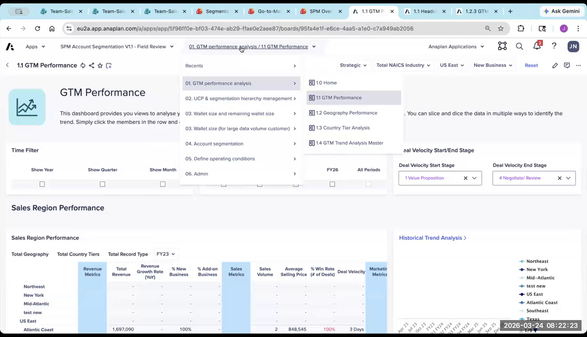
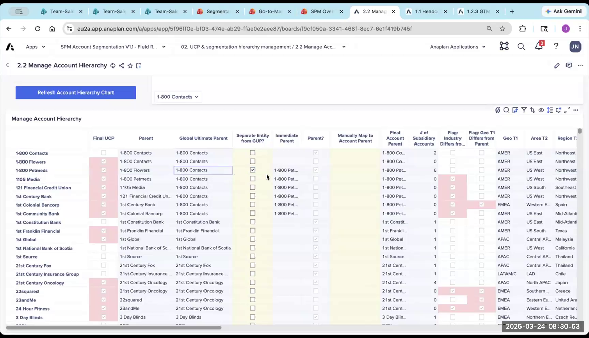
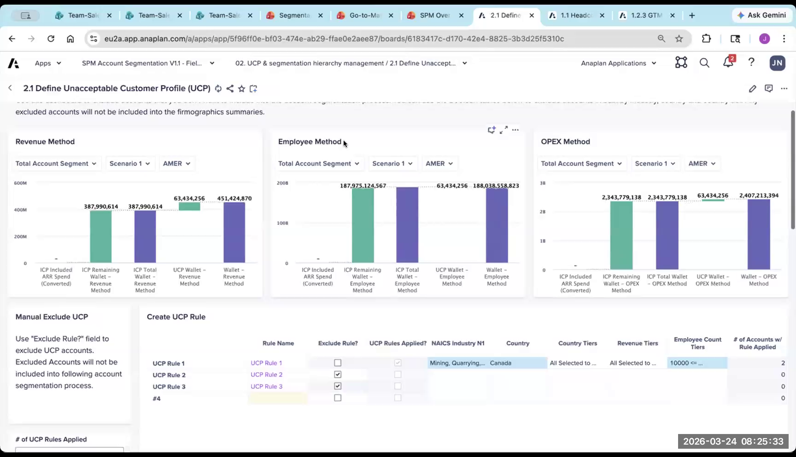
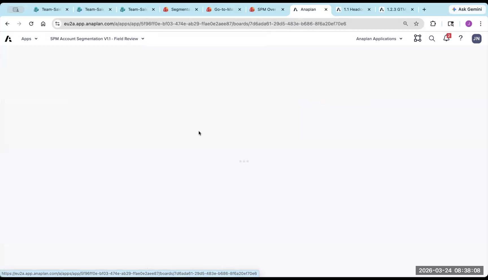
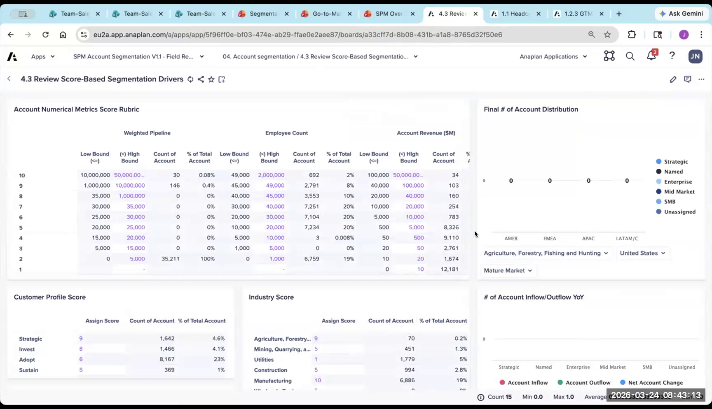
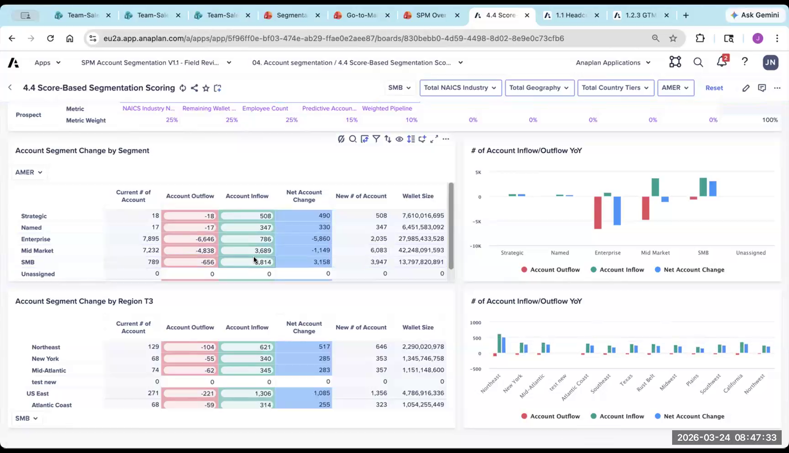
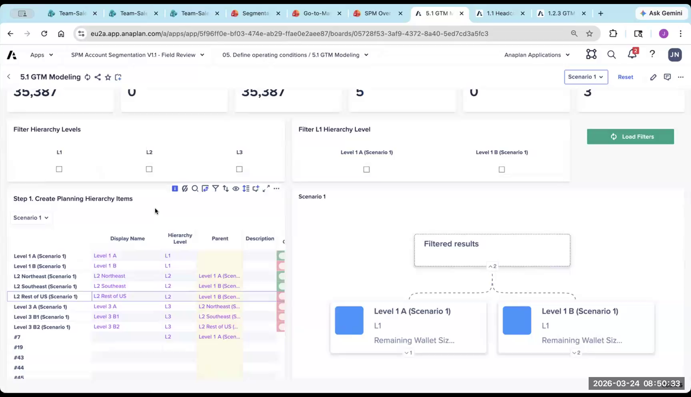

Segmentation & Scoring App: End-to-End Walkthrough
Understanding the generated Segmentation UX application
The Segmentation app answers one core question: which segment does each account belong to, and why? This drives territory carving in T&Q and headcount planning in Capacity. A 15–20 minute customer demo should focus almost entirely on sections 4 and 5 — rule-based and score-based segmentation.
App Overview
- Access the Segmentation Demo UX App in your partner workspace
- The app processes all accounts through scoring and/or rule-based logic to arrive at a final segment for each account
- Key output: a segment attribute per account that flows into T&Q (territory carving) and Capacity (headcount planning)
1. Historical Performance
Shows historical performance data by sales hierarchy and configurable dimensions.
- Purpose: baseline understanding of how different account types have performed historically
- Filters on the left apply to visuals on the right
- Low priority for customer demo — spend your time on sections 4 and 5 instead

2. Account Hierarchy Setup
Review and manage parent-subsidiary relationships before running segmentation.
- Key toggle: are you segmenting at the parent level or the lowest account level?
- Ability to "separate" an account from its Global Ultimate Parent — breaks the roll-up chain, making the account its own independent entity for segmentation purposes
- Use case: a subsidiary that operates independently and should be segmented on its own merits, not inherited from the parent

3. Universal Coverage Population (UCP) — Eligibility Rules
The UCP defines which accounts are in scope for segmentation — which ones will receive a segment at all. Accounts that don't meet any UCP inclusion criteria will not get a segment.
Two types of rules:
- Inclusion rules: Accounts that match are included in the segmentation universe
- Exclusion rules: Accounts that match are removed from consideration entirely
- Use case: remove tiny companies (<10 employees) that will never be relevant prospects
- Shows count of matched accounts in real time as you build rules — instant feedback

4. Rule-Based Segmentation (Core Demo Section)
Define explicit rules per segment: if an account meets these attribute conditions → it gets assigned to this segment.
- All rules within a segment are additive — if an account matches two different Strategic rules, it's still Strategic
- Attributes must be list-formatted (as configured in the Configurator)
- Example rules:
- Strategic = high wallet tier + enterprise industry + revenue band > $10M
- Named = large employee count + key target industry (but below Strategic threshold)
- Rules for each segment stack — more specific conditions narrow the account count shown in real time
- Account count updates in real time as you add conditions — immediately tangible

5. Score-Based Segmentation
Every account gets a numeric score (0–10 by default) based on weighted metrics. That score maps to a segment via the rubric defined in Admin.
- Acts as a catch-all: accounts that don't meet rule-based criteria still get a segment via scoring
- Rule-based can be configured to override score-based when both apply
- Score distribution chart: shows how many accounts fall into each scoring bucket — great for calibrating with customers ("you said you want 10% Strategic — let's see if the scoring gets us there")

6. Segment Inflow / Outflow
Shows how accounts are moving between segments as a result of your segmentation exercise. Compares the incoming segment (from CRM/upstream system) to the new segment this app is assigning.
- Powerful for demonstrating the business impact of a re-segmentation exercise to leadership
- Example: "You're moving 500 accounts from Commercial to SMB, and 120 from Named to Strategic — here's what that means for your headcount requirements in Capacity."
- This is the key connection point to Capacity Planning

7. GTM Hierarchy Planning (Segmentation → T&Q Bridge)
A sandbox environment for modeling next year's territory hierarchy structure before committing anything to T&Q.
- Create a new hierarchy from scratch: define nodes, parent relationships, and rules for which accounts fall into each node
- Visualize via hierarchy tree card
- Resource alerts (V2): flags if your planned hierarchy is unbalanced — too many accounts in one node, too few in another
- Completely separate from the live hierarchy — changes here don't affect T&Q until exported
- V2 improvement: much more intuitive with significantly better reporting on hierarchy balance

What to Demo to Customers (15–20 min)
- UCP rules — show how you filter the account universe and see real-time counts
- Rule-based segmentation — show real-time account count as rules are added (this is the money shot)
- Score-based — show the distribution chart and calibrate to target segment mix
- Inflow/outflow — show the business impact of re-segmentation
- Wallet size (if applicable) — show the math and the whitespace calculation
What to Skip in Customer Demos
- Historical performance page — low value for the time it takes
- Backend admin pages — not relevant to business users
- Wallet size detail pages — unless the customer specifically cares about whitespace analysis